Type
Course Project - UCI - Software Design I
(Design Studio II)
Professor
André van der Hoek
Department Chair of Informatics
Time frame
Oct 2014 - Nov 2014
(1 month)
Role
Software Designer
Responsibilities
Requirements Engineering
Competitive Analysis
Constructed Personas
Interaction Design
Heuristic Evaluation (Design Studio III)
Coordinated & Facilitated Meetings
Submitted Group Documents
Team
Nathanial Benjamin
Tina Bui
Joshwin Greene
Nguyen Nguyen
Christopher Ries
Brian Ung
Design Tools Used
Balsamiq
Adobe Illustrator
Pencil & Paper
Background
This project was a multi-week, multi-step effort intended to help us practice using various software design methods within a team of six students. These methods came from the following software design phases: application design, interaction design, and architecture design.
The Challenge
An imaginary client, Professor E, has noticed that her students are having trouble understanding the timing of traffic signals. Professor E wants to provide her students with some software that they can use to “play” with different traffic signal timing schemes, in different scenarios. She anticipates that this will allow her students to learn from practice, by seeing first-hand some of the patterns that govern the subject.
Design a traffic flow simulation program based on the given requirements and desired outcomes. [ View Design Prompt ]
Work Ethic
I played an active role in keeping the team organized. Besides coordinating and facilitating meetings, I also took minutes and updated those that weren’t able to attend. My ultimate goal was to make sure that we always had a plan for each milestone. When a task could be broken down, I usually suggested that we split it up in order to ease everyone’s workload and not give a member too much to handle on their own. Moreover, I made it a point to leverage people’s past experiences when we were delegating tasks so that we could play to people’s strengths. Lastly, I attended every official meeting and compiled and turned in the final documents for each milestone.
Milestone Description
For the first milestone, we were tasked with completing the following:
Identify the project’s audience, stakeholders, goals, constraints, and assumptions
Apply the feature comparison and mind mapping design methods
Initial Brainstorming
To start, we used the mind mapping method in order to help us brainstorm the audience, stakeholders, goals, contraints, and assumptions.
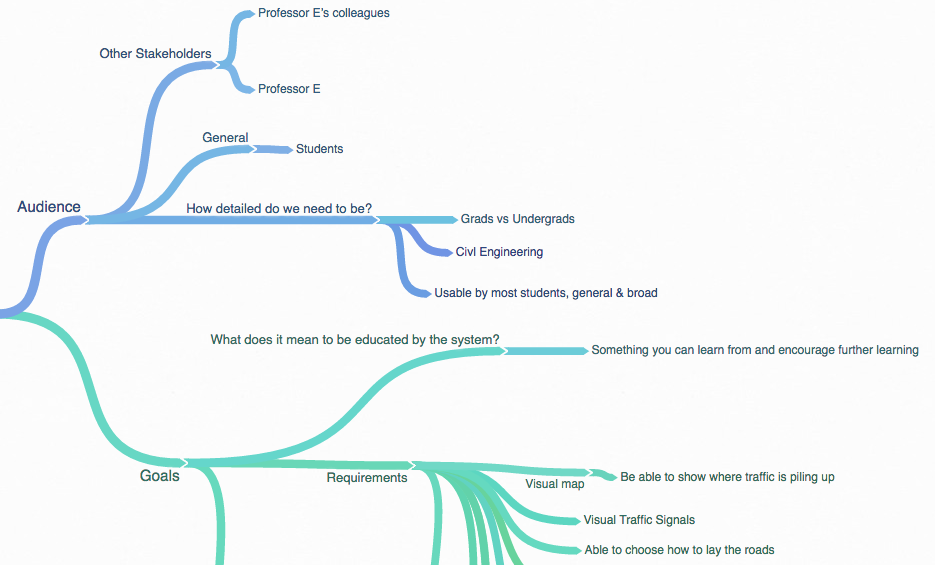
Feature Comparisons
In order to give us an idea of what type of features should be supported for the type of software that we were tasked with designing, we made use of the feature comparison design method. So, everyone was assigned the task of picking a similar or competing product to analyze and we would come together and compare them using a set of criteria, which can be seen in the first column of the following chart. Afterwards, we would put a list of conclusions together.
Personal Contribution: the TransModeler competitor
| Berkeley Madonna | Google Maps | SimCity | TransModeler | PTV Vissim | |
|---|---|---|---|---|---|
| Educational | True | False | Debatable | Debatable | True |
| Views traffic | False | True | True | True | True |
| Easy to use | Moderate | Easy | Debatable | Debatable | Moderate |
| Easy to understand | Moderate | Easy | Debatable | Debatable | Moderate |
| Dynamic road creation | False | False | True | True | True |
| Define size of road | False | False | True | True | True |
| Display traffic lights | False | False | False | False | True |
| Bottleneck Scenarios | True | True | True | True | True |
Conclusions
-
Every simulation product that focuses on simulating traffic allows you to view traffic.
-
Since traffic simulators, like TransModeler and PTV Vissim, are meant for traffic engineers and planners, the learning curve will depend on the user.
-
The majority of the given traffic simulators (SimCity, TransModeler, and PTV Vissim) allow for dynamic road creation, customizable roads, and bottleneck scenarios.
-
Two out of the three given traffic simulators do not allow you to display traffic lights. It seems like this is a rare feature for traffic simulation products.
Milestone Description
For the second milestone, we were tasked with completing the following:
Make any necessary refinements to our audience, stakeholders, goals, constraints, and assumptions
Apply the persona and morphological design methods
Create our final interaction design (as a series of screenshots that describes how the system works)
Create our final implementation design (via a UML class diagram with documentation)
Personas
In order to give us a better understanding of the type of users that we were designing the sytem for, the persona design method was deployed. In our group, we had everyone come up with at least one persona. Afterwards, we came together as a group in order to discuss our ideas for personas and make any necessary refinements before everyone fleshed out their personas individually.
Personal Contributions: the Student Researcher and Learner personas
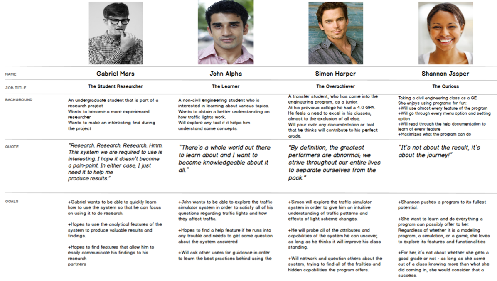
Functional and Non-Functional Requirements
In order to help us put the morphological chart, mockups, and UML diagrams together, we went ahead and finalized our system’s functional and non-functional requirements based on our discussions thus far. This document was used to determine what needed to be designed and how certain features should behave.
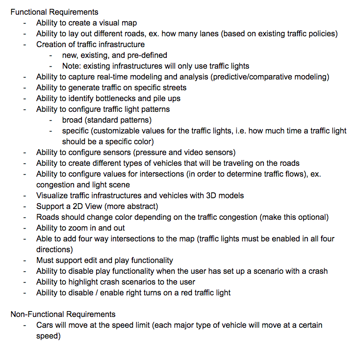
Morphological Chart
Once the functional and non-functional requirements were completed, Tina and Brian were assigned the task of brainstorming ideas on how certain features / functions should be achieved through the creation of a morphological chart.
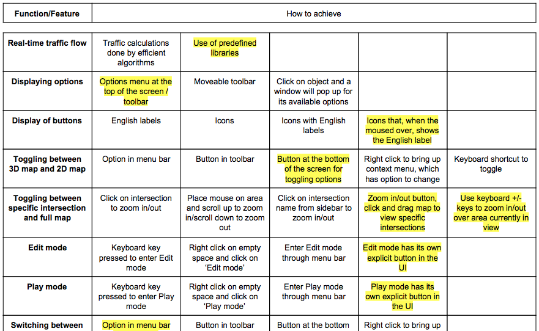
Interaction Design
With the help of Nathanial, I led the interaction design work. I had already started to create the wireframes while the morphological chart was being constructed. However, once it had been completed, I chose how the listed features/functions would be achieved based on what I thought was consistent with our design up to that point. These selections were denoted by the yellow highlights, which can be seen in the preview above. I also made a few edits to make sure everything was consistent with what had been wireframed up to that point.
Personal Contributions: All wireframes and related documentation, except for the ‘Lighting Scheme Comparison Tool’ and ‘Define Attributes for Individual Roads’ wireframes, which were created by Nathanial. All wireframes were created using Balsamiq. I only used Adobe Illustrator in order to create some custom icons.
An Excerpt of my Thought Process
To give me a starting point, I created a use-case / task flow diagram. This diagram was mainly used to give me an idea of a flow that made sense.
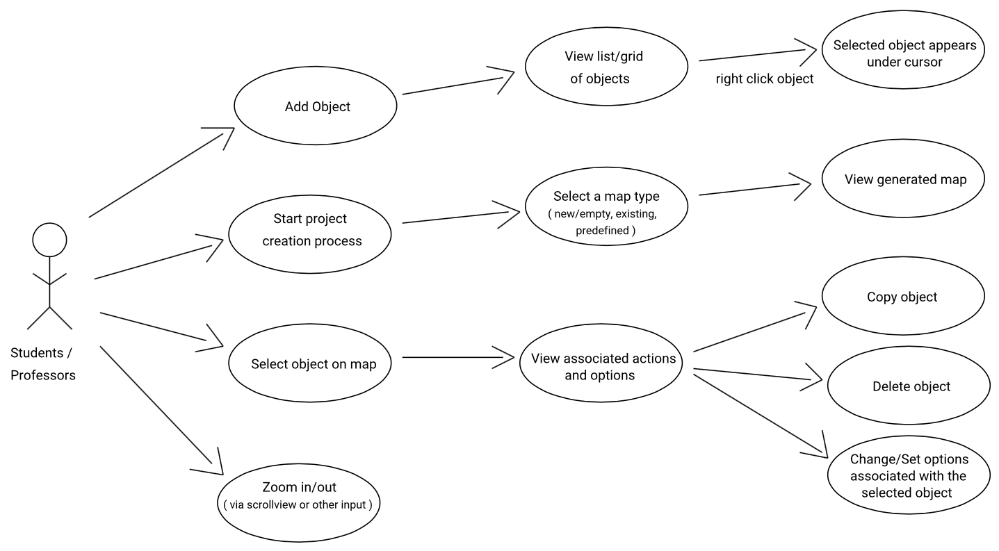
This diagram is a recreation of the diagram that I had put together by hand.
After putting this diagram together, I started to construct wireframes for the associated flows. The most notable one had to be the one related to configuring intersections, which branched off of the ‘Select object on map’ flow. The good thing is that I was able to start off with a nice foundation based on the options that I chose from the morphological chart. However, it didn’t mean that it had all the answers. Although I appreciated the amount of freedom that this gave me.
So, to start, I asked myself the following question: “what should the user be able to do when they open the configure intersection menu?” Based on our morphological chart and functional requirements, I knew that the user should be allowed to configure the following for each intersection: its layout and left-turn lanes, its sensors, and its lighting scheme. So, those three became the main options in the initial menu that would pop up after right clicking an intersection.
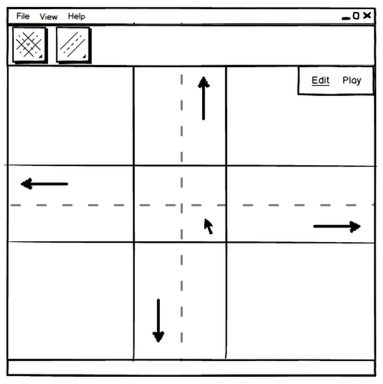
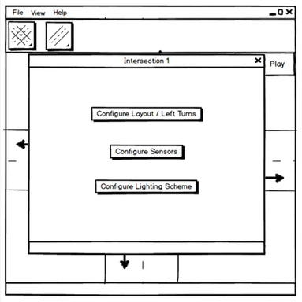
For the first option, the morphological chart made this easy as I knew that I needed to allow the user to turn protected left turns on or off on a per intersection and directional basis. So, it made sense to prioritize the direction since the other options were direction-dependent.
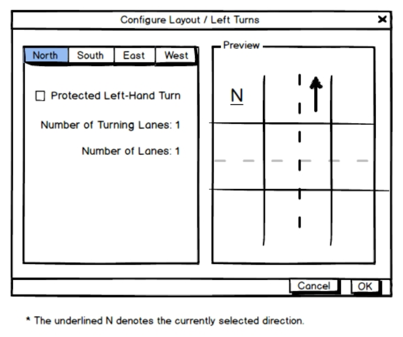
When it came to the other two menu options, it was a different story as the morphological chart only said that they would be configured when the user clicked on the intersection. So, for the ‘Configure Sensors’ menu option, I again focused on picking different directions for a given intersection. When brainstorming how I would go about placing sensors, I thought of what you would see if you were sketching up a football play where Os represented your players while Xs represented the opposing players. Starting with this line of thinking and in the context of a traffic intersection, it made sense to represent placement locations with an X and filled locations with an O. By doing this, users would have a straightforward and easy to understand process when it came to placing pressure and video sensors at an intersection. For reference, for the video sensors, the idea is that the sensors would be placed on the traffic light support arms, like they normally would be in real life.
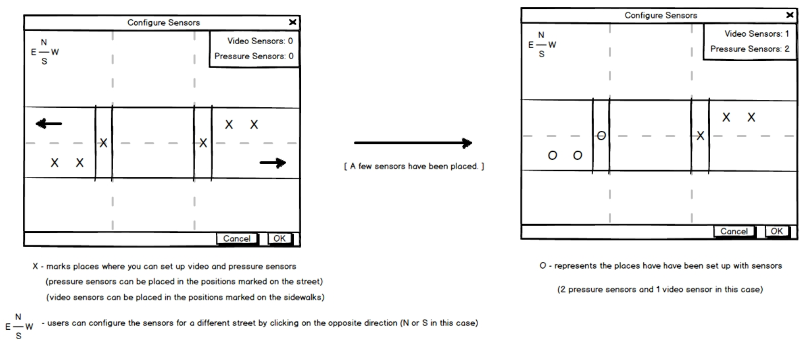
As for the ‘Configure Lighting Scheme’ menu option, it ended up being the more challenging system to design. At first, I found the act of configuring an intersection’s lighting scheme to be unclear. However, after getting some clarification from my teammates, it made more sense. The basic idea is that besides the use of timers, sensors would be used to modify the timing of traffic lights in different ways.
So, with this information in hand, I first thought of having different types of schemes, like timed, ordered, and custom lighting schemes. In order to make it easier for myself and give myself a starting point, I decided to have all intersections use a default scheme initially, which would make use of static traffic light timers. For example, the default setting for all intersections could have all of the traffic lights at an intersection be green for one minute. Besides this default setting, I added the option to create custom schemes, which would allow users to configure the scheme’s name, type, starting direction (first traffic light to be green), the timer duration for green lights, and conditions for how sensors would be used.
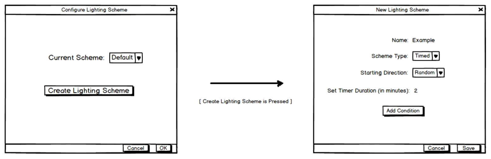
When it came to the act of setting conditions, I was wondering what would make the most sense. As a possible idea that was based on my use of IFTTT (IF This, Then That), I thought I could make use of the way they allow users to use online services to trigger other online services. For example, with IFTTT, you can make it so that articles saved for later on Feedly could automatically be saved to your reading list on Pocket.
So, for this IFTTT-inspired system to configure conditions using sensors, the user would start by setting the trigger, which is associated with the “if this” phase of the IFTTT system. In this case, the user would be asked to identify which of the placed sensors would be used for the condition being configured. For reference, in the wireframe, W/E stands for a sensor on the road of an intersection that goes from the west to the east, and WP1 stands for the first pressure sensor on the west side of the intersection.
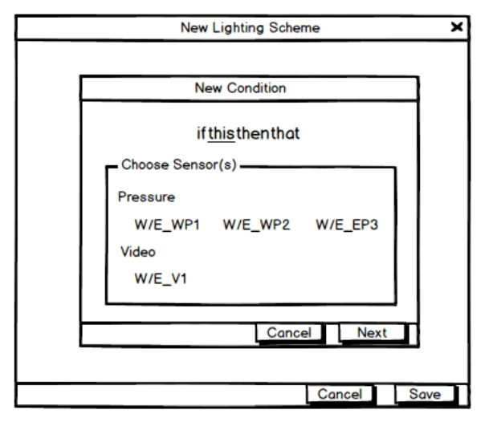
After choosing the relevant sensors, the user would choose how the sensors would be triggered. In this case, since only pressure sensors were selected, the system notices and only allows the user to specify if the sensor should be triggered when there is pressure or when there is no pressure.
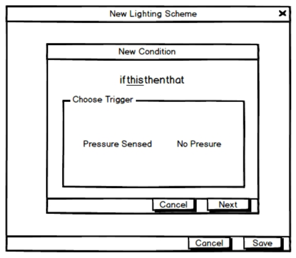
Once the trigger is selected, we move onto the “then that” phase of the IFTTT system. In this case, the user would be asked to choose a traffic light pair or a specific traffic light.
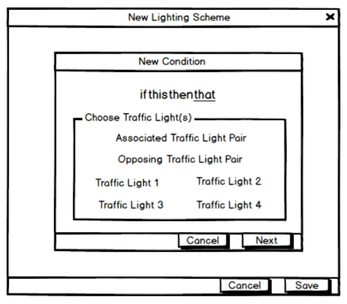
After the user makes their choice, the user would be asked to choose what should happen to the selected traffic lights when one of the selected sensors has been triggered. The user would be able to decrease or increase the amount of time that the traffic lights stay green.
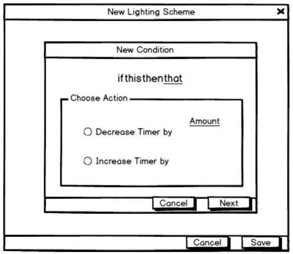
When the user confirms this action and sets the amount of time that the timer should be modified, the user would be presented with a summary of the configured condition. In the accompanying wireframe, if the W/E_WP1 and W/E_WP2 pressure sensors sense cars on top of them, then that means that they will trigger the opposing traffic lights(traffic lights going north to south) to decrease the amount of time they would stay green by 15 seconds. When the user confirms the condition, they will be brought back to the ’New Lighting Scheme’ menu and see that the new condition was added, with the condition’s main characteristics specified, with the option to edit or delete it.
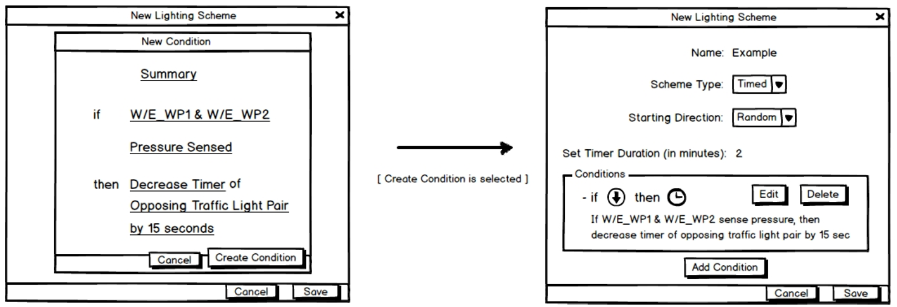
As you can see, this system ended up being more involved than the other two menu options. However, based on the intended audience and the given requirements, this design avenue made sense to me at the time. If I had more time, I would have explored other avenues by conducting more research on how other traffic simulation products allowed users to achieve the same type of functionality.
UML Diagrams
As for the UML class diagrams and associated documentation, they were constructed by Christopher, Nguyen, and Nathanial.
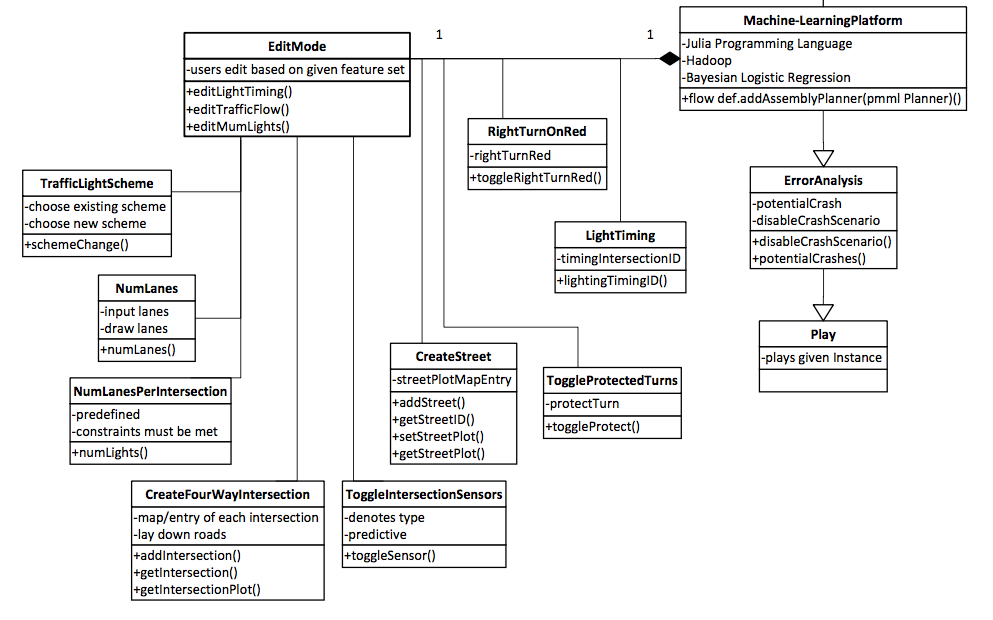
Description
Disclaimer: This heuristic evaluation was not a part of the same design studio. However, for the next design studio, everyone in the class was tasked with doing a heuristic evaluation of their team’s final interaction design. We needed to score the design based on Nielsen’s 10 heuristics and provide a rationale for each score, e.g. by specifying specific tasks and denoting what worked or didn’t work.
Here’s a preview of how I evaluated our system’s final interaction design: (shown previously)
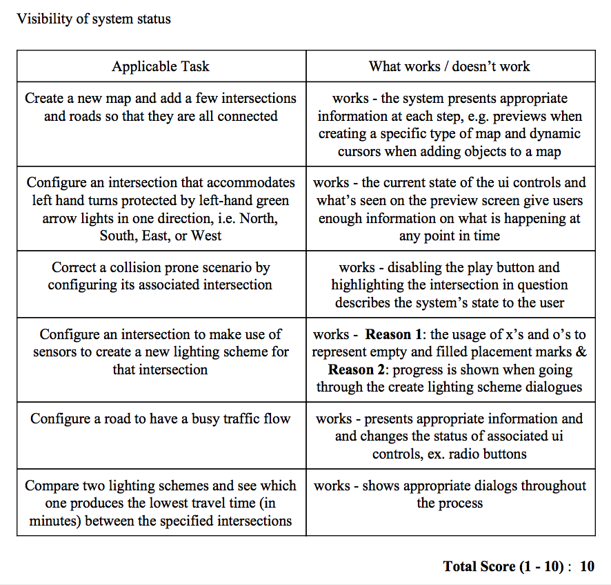
As for our grade, we achieved...
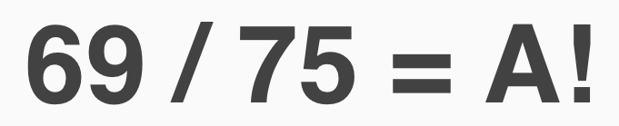
For this class, getting an A on a project wasn’t an easy thing to do. I remember our professor saying that we should work on these projects as if we were on the job and that we should strive to go above and beyond when it came to the tasks that we were assigned. I can safely say that our work ethic for this project is what led us to achieve this feat.
© Joshwin Greene 2017